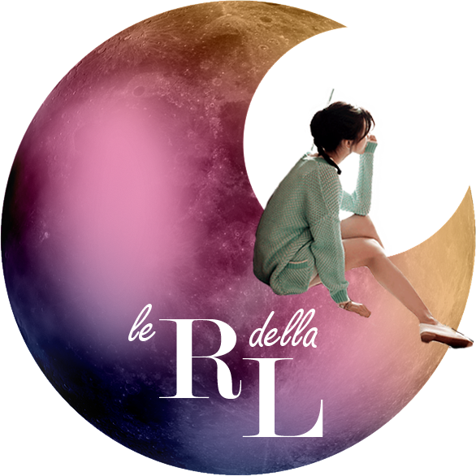
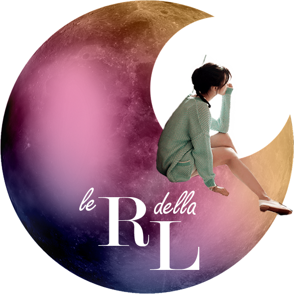

br>
contatti
thrillernord@gmail.com
superleo78@libero.it
Indirizzo e-mail amministratrice gruppo Facebook "Thriller Noir dal Nord Europa-non solo Larsson":
cavalierenord@gmail.com
Indirizzo e-mail amministratrice sito internet "Thrillernord":
giuseranzi@gmail.com
Ciao a tutti, mi chiamo Elisa, anche se molti mi conoscono come ViaggiatricePigra....inutile dire che amo leggere! ^.^
Preferisco gli horror, i thriller e i fantasy, ma sono ingorda e leggo di tutto Emoticon wink
Da un annetto infatti ho aperto un blog tutto mio in cui poter parlare di questa mia passione che mi accompagna da sempre.
ViaggiatricePigra
Erica
Erica “Leggo fantasy da quando avevo 7 anni e ora che ne ho 27 ho scoperto una passione per i gialli. Scienziata di formazione, non ho mai abbandonato i libri che adesso recensisco sul mio blog per editori italiani e stranieri. Nata e cresciuta in Sardegna ma trapiantata in Australia, non esco di casa se non ho almeno due libri nella borsa. Qui su ThrillerNord troverete le mie opinioni sulle nuove uscite nel mondo del crime.
Link al blog
LibrettoReviews
Federica
"21 anni vissuti tra le pagine di libri, le scene di film e gli episodi di serie tv. La passione per la lettura nasce in tenera età, cresce grazie ai libri di J.K. Rowling e si trasforma dopo l’incontro con Sherlock Holmes, scoprendo il genere giallo e thriller. Lettrice pendolare, tra una lezione e l’altra di ingegneria, ama tuffarsi in storie misteriose e condividere pensieri e impressioni sul suo blog “Stories - Books and movies”.
storiesbooksandmovies.blogspot
Fiorella
Ciao, mi chiamo Fiorella Carta e vengo da Buddusò, un piccolo paesino dell' entroterra sardo.
Leggo libri senza figure dall'età di 7 anni, quando mia zia mi regalò I ragazzo della Via Pal di Molnar. Da lì l'amore per la lettura è cresciuto a dismisura. Ho scoperto King e Agatha Christie subito dopo e in adolescenza i grandi classici. Leggo di tutto, anche se i thriller sono la mia dose di adrenalina preferita.
Se vi va potete seguirmi anche sulla mia pagina Un calderone pieno di libri.
Uncalderonepienodilibri
Isabella
Mi chiamo Isabella e vivo in Piemonte, in provincia di Torino.
Ho imparato a leggere già da piccolissima ed insieme alla musica ed alla vita all'aria aperta è diventato uno dei miei passatempi preferiti in pochissimo tempo.
Affezionata al libro cartaceo ho accolto con scetticismo l'evoluzione al digitale: una volta acquistato l'e-reader, però, ho scoperto di non riuscire a farne a meno. Leggo molto di più, non mi stanco gli occhi e riesco ad apprezzare tanti di quei romanzi che non ho mai letto per svariati motivi. I miei generi perferiti sono il Fantasy ed il Thriller: proprio per condividere questa passione ho un lit-blog all'attivo e, con altrettanto impegno, cercherò di dare il mio contributo in questo bel progetto!
boscodeisognifantastici.blogspot
Simona
Ciao a tutti, mi chiamo Simona e sono della provincia di Lecco dove vivo con la mia famiglia. Lavoro e mi piace trascorrere il mio tempo libero leggendo. Sono una lettrice e accumulatrice di libri ossessivo- compulsiva senza speranza di guarigione; onnivora nei gusti letterari con voi condividerò le mie impressioni sui thriller di autori italiani.
Buone letture!
Virginia
Se penso a uno dei miei primi ricordi da piccola mi viene in mente di me in libreria con mia papà a spulciare fra gli scaffali, oppure seduta a casa mentre sfoglio grandi volumi pieni di disegni e mi invento le storie. Da allora sono passati molti anni (all'anagrafe dicono 35, ma credo abbiano fatto male i conti), ma io resto sempre lì, tra i libri, a sognare e sto facendo di tutto perché questo amore si trasmetta anche ai miei figli! Leggo di tutto, ma il primo amore da adulta sono stati i thriller, rubati dalla collezione di papà. Questa passione si è trasformata in un blog, che mi ha portato nuovi amici e tante cose belle. Ogni tanto vi dirò la mia opinione anche qui

lerecensiondellalibraia.blogspot


Ufficio stampa:
Per comunicazioni, proposte, richieste di collaborazione, è possibile contattare la redazione scrivendo a:thrillernord@gmail.com
Altri contatti:
Indirizzo e-mail fondatore e amministratore gruppo Facebook "Thriller Noir dal nord Europa-non solo Larsson":superleo78@libero.it
Indirizzo e-mail amministratrice gruppo Facebook "Thriller Noir dal Nord Europa-non solo Larsson":
cavalierenord@gmail.com
Indirizzo e-mail amministratrice sito internet "Thrillernord":
giuseranzi@gmail.com
Collaboratori:
ElisaCiao a tutti, mi chiamo Elisa, anche se molti mi conoscono come ViaggiatricePigra....inutile dire che amo leggere! ^.^
Preferisco gli horror, i thriller e i fantasy, ma sono ingorda e leggo di tutto Emoticon wink
Da un annetto infatti ho aperto un blog tutto mio in cui poter parlare di questa mia passione che mi accompagna da sempre.
ViaggiatricePigra
Erica
Erica “Leggo fantasy da quando avevo 7 anni e ora che ne ho 27 ho scoperto una passione per i gialli. Scienziata di formazione, non ho mai abbandonato i libri che adesso recensisco sul mio blog per editori italiani e stranieri. Nata e cresciuta in Sardegna ma trapiantata in Australia, non esco di casa se non ho almeno due libri nella borsa. Qui su ThrillerNord troverete le mie opinioni sulle nuove uscite nel mondo del crime.
Link al blog
LibrettoReviews
Federica
"21 anni vissuti tra le pagine di libri, le scene di film e gli episodi di serie tv. La passione per la lettura nasce in tenera età, cresce grazie ai libri di J.K. Rowling e si trasforma dopo l’incontro con Sherlock Holmes, scoprendo il genere giallo e thriller. Lettrice pendolare, tra una lezione e l’altra di ingegneria, ama tuffarsi in storie misteriose e condividere pensieri e impressioni sul suo blog “Stories - Books and movies”.
storiesbooksandmovies.blogspot
Fiorella
Ciao, mi chiamo Fiorella Carta e vengo da Buddusò, un piccolo paesino dell' entroterra sardo.
Leggo libri senza figure dall'età di 7 anni, quando mia zia mi regalò I ragazzo della Via Pal di Molnar. Da lì l'amore per la lettura è cresciuto a dismisura. Ho scoperto King e Agatha Christie subito dopo e in adolescenza i grandi classici. Leggo di tutto, anche se i thriller sono la mia dose di adrenalina preferita.
Se vi va potete seguirmi anche sulla mia pagina Un calderone pieno di libri.
Uncalderonepienodilibri
Isabella
Mi chiamo Isabella e vivo in Piemonte, in provincia di Torino.
Ho imparato a leggere già da piccolissima ed insieme alla musica ed alla vita all'aria aperta è diventato uno dei miei passatempi preferiti in pochissimo tempo.
Affezionata al libro cartaceo ho accolto con scetticismo l'evoluzione al digitale: una volta acquistato l'e-reader, però, ho scoperto di non riuscire a farne a meno. Leggo molto di più, non mi stanco gli occhi e riesco ad apprezzare tanti di quei romanzi che non ho mai letto per svariati motivi. I miei generi perferiti sono il Fantasy ed il Thriller: proprio per condividere questa passione ho un lit-blog all'attivo e, con altrettanto impegno, cercherò di dare il mio contributo in questo bel progetto!
boscodeisognifantastici.blogspot
Simona
Ciao a tutti, mi chiamo Simona e sono della provincia di Lecco dove vivo con la mia famiglia. Lavoro e mi piace trascorrere il mio tempo libero leggendo. Sono una lettrice e accumulatrice di libri ossessivo- compulsiva senza speranza di guarigione; onnivora nei gusti letterari con voi condividerò le mie impressioni sui thriller di autori italiani.
Buone letture!
Virginia
Se penso a uno dei miei primi ricordi da piccola mi viene in mente di me in libreria con mia papà a spulciare fra gli scaffali, oppure seduta a casa mentre sfoglio grandi volumi pieni di disegni e mi invento le storie. Da allora sono passati molti anni (all'anagrafe dicono 35, ma credo abbiano fatto male i conti), ma io resto sempre lì, tra i libri, a sognare e sto facendo di tutto perché questo amore si trasmetta anche ai miei figli! Leggo di tutto, ma il primo amore da adulta sono stati i thriller, rubati dalla collezione di papà. Questa passione si è trasformata in un blog, che mi ha portato nuovi amici e tante cose belle. Ogni tanto vi dirò la mia opinione anche qui

lerecensiondellalibraia.blogspot